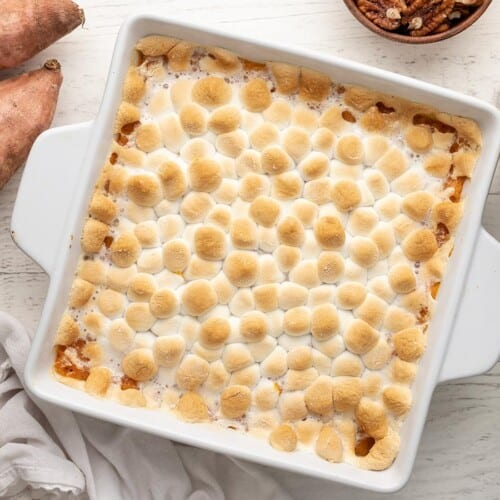

Sweet Potato Casserole

Description
Greater than the sum of its parts, this buttery sweet potato casserole is a breeze to put together and will be the star of your dinner table!
Ingredients
- 4 lbs sweet potatoes
- 1/2 cup brown sugar
- 4 Tbsp salted butter
- 1/3 cup heavy cream
- 1/2 tsp salt
- 1/2 tsp vanilla extract
- 1 pinch nutmeg
- 1/4 tsp cinnamon
- 2 cups mini marshmallows
Directions
- Place a rack in the middle of your oven and preheat it to 350ºF. Grease a three-quart casserole dish with butter. Set a large pot of water over high heat. Peel and dice sweet potatoes. Add them to the water once it begins to boil.
- When the sweet potatoes are fork-tender, drain them, and add them to a large bowl. Mash them until they are smooth.
- To a medium-sized heavy bottom pan set over medium heat add brown sugar and salted butter. Whisk until a caramel forms.
- Add the cream and whisk to incorporate.
- Add the salt, vanilla, nutmeg, and cinnamon to the caramel and whisk to incorporate.
- Mix the caramel into the mash and then add the mash into the greased casserole dish. Smooth the top with a spatula.
- Top the casserole with 2 cups mini marshmallows, more or less to your liking.*
- Bake the casserole at 350ºF until the marshmallows are golden, about 20 minutes.